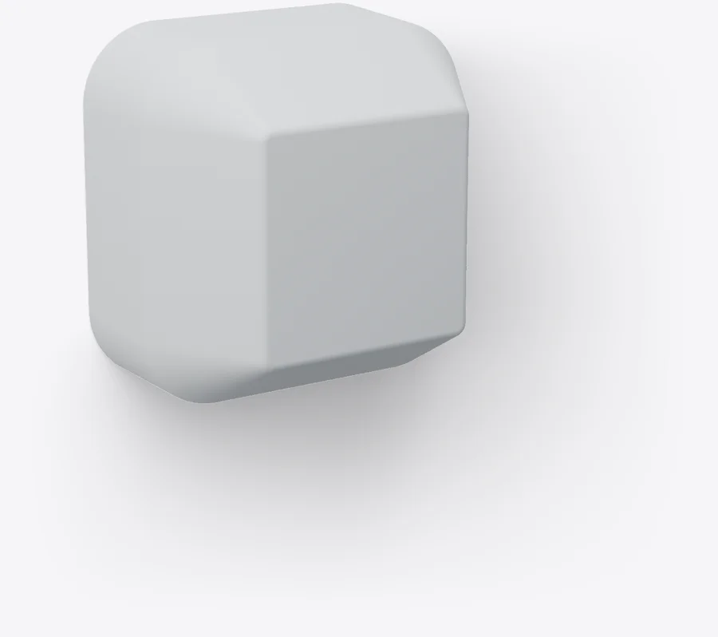
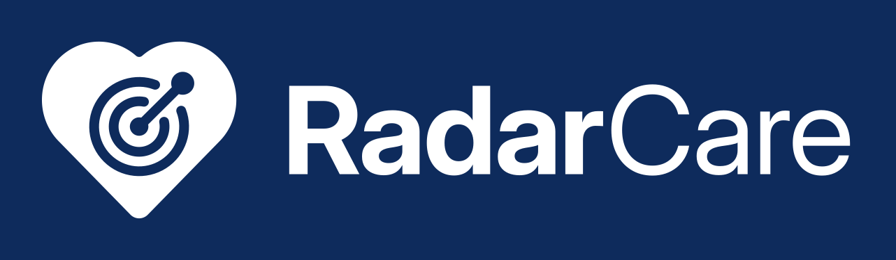

Monitoraggio automatico
I parametri vengono rilevati e registrati da soli nella cartella clinica. Meno rilevazioni manuali, meno lavoro per il personale.
Dispositivo medico CE · Classe I
Il monitoraggio continuo e senza contatto di ogni posto letto, giorno e notte.

RadarCare è un piccolo sensore che si applica a parete, sopra la testiera del letto. Rileva in modo continuo frequenza cardiaca, frequenza respiratoria e movimenti del paziente, senza contatto, senza telecamere e senza nulla da indossare. I dati arrivano da soli nella cartella clinica elettronica.
Merito della tecnologia radar a onde millimetriche: affidabilità da dispositivo medico certificato, in un oggetto discreto che il paziente quasi non nota.
Cosa rileva
Rilevata in modo continuo, senza elettrodi né sensori sul corpo.
Ogni atto respiratorio, monitorato anche durante il sonno.
Segnala quando il paziente lascia il letto e quando vi ritorna.
Riconosce i momenti di irrequietezza, a ogni ora.
Avvisi in tempo reale, con soglie configurabili per ogni paziente.
Vantaggi per la struttura
Il monitoraggio avviene in automatico. Il personale dedica meno tempo alla raccolta dei dati e ha più sicurezza, soprattutto di notte.
I parametri vengono rilevati e registrati da soli nella cartella clinica. Meno rilevazioni manuali, meno lavoro per il personale.
Un monitoraggio continuo, 24 ore su 24, con avvisi in tempo reale e soglie configurabili per ogni paziente.
Non c'è nulla da indossare o da staccare: finché il paziente è a letto, il monitoraggio continua.
Nessun contatto e nessun cavo sul paziente. Funziona al buio e attraverso coperte e lenzuola, senza disturbare il riposo.
Solo parametri, nessuna immagine. La riservatezza del paziente è rispettata per progetto.
Andamento dei parametri e dei movimenti sempre consultabile: un supporto concreto nel dialogo con i familiari, soprattutto con i pazienti più irrequieti.
Come funziona
Ethernet · USB-C, PoE opzionale
La webapp
Ogni posto letto ha la sua scheda: parametri in tempo reale, stato e avvisi. Su PC, tablet e smartphone.
Interfaccia illustrativa con dati di esempio.
La cartella clinica elettronica è già integrata. Per impianti su misura, RadarCare si integra anche con i sistemi di terze parti già in uso nella struttura.
Installazione
Plug and play: nessuna configurazione complessa, nessun intervento sul paziente.
Sopra la testiera del letto, dove rileva al meglio i parametri del paziente.
Basta una presa elettrica vicino al letto. L'alimentatore è incluso.
Si collega in wireless al gateway e si calibra automaticamente.
Sempre incluso

Ti aiutiamo a dimensionare l'impianto sulla tua struttura. Compila la richiesta: un nostro referente ti ricontatta.
Preferisci parlarne a voce?
+39 392 184 1021 · info@cmtecnologie.it
Area clienti
Per le strutture che hanno scelto RadarCare: impianti, assistenza, aggiornamenti e documenti in un unico portale.
Anteprima illustrativa con dati di esempio: contenuti e funzioni del portale possono differire.